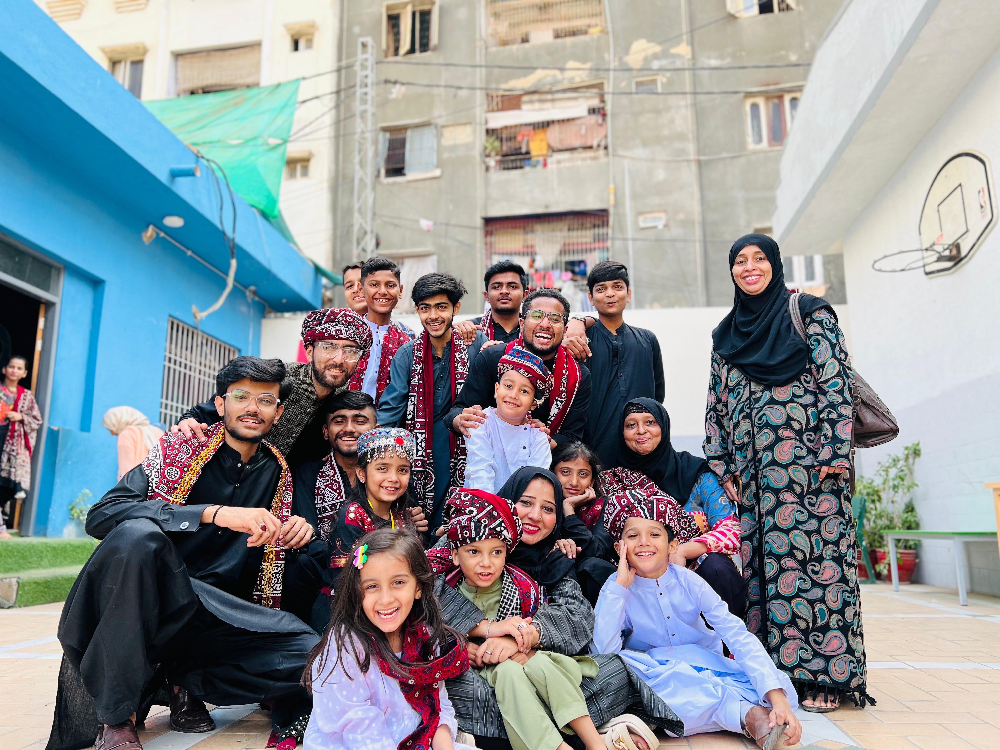
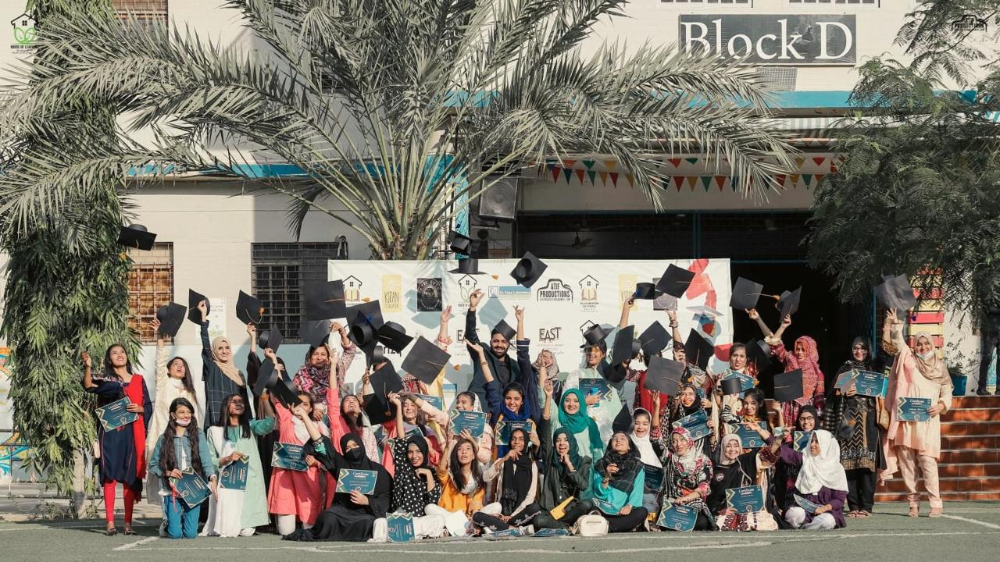

out-of-school children admitted to school
← Our work
School Preparatory Program for brighter futures.
Helping children reconnect with education and prepare to thrive in school.
Learn more ↗02 Locally rooted. Future focused.

Opportunity starts with access.
A confident start for children returning to education
Prepare to learn. Open doors.
HOL School Preparatory Program helps children build a bridge from being out of school into formal education.
Foundational learning
Build the skills children need to feel confident as learners.
School preparation
Help children get ready to enter and participate in formal schooling.
A path forward
Support children as they reconnect with education and continue learning.
A stronger start for every learner.
With the right preparation and support, children can take their next step into school and keep moving forward.
More than 500 out-of-school children have been successfully admitted to school through this work.
Explore all HOL programs ↗